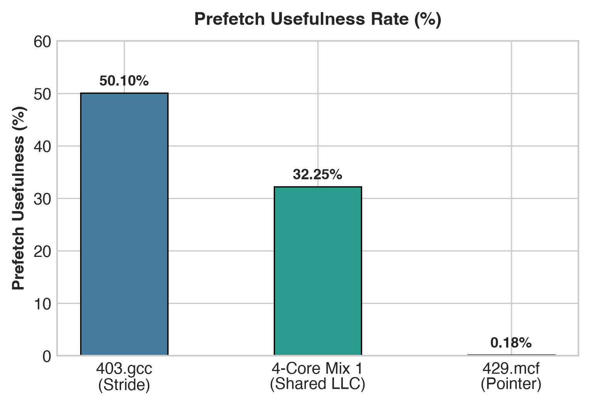
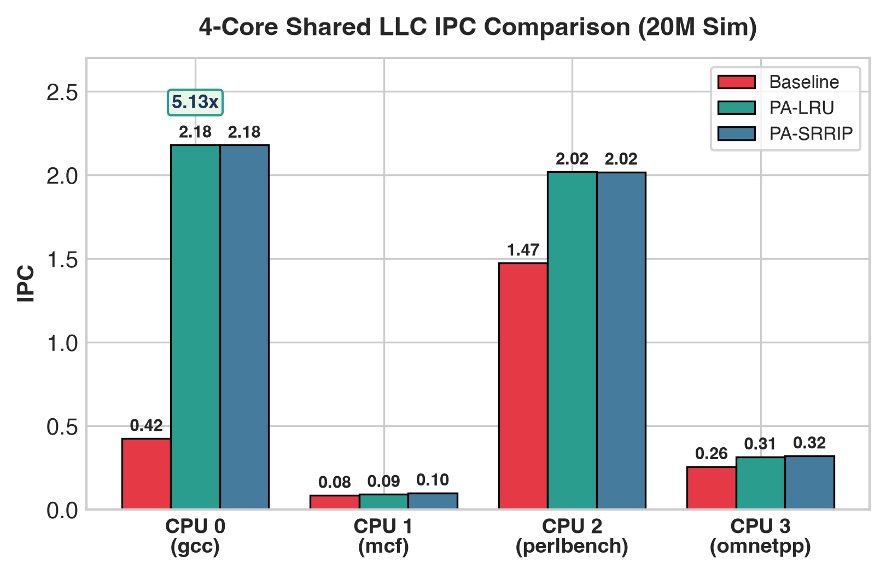

429.mcf).access_type::PREFETCH hint (0 extra storage bytes).

| Metric | Baseline (LRU) | PA-LRU | PA-SRRIP |
|---|---|---|---|
| CPU 0 (gcc) IPC | 0.4248 | 2.1770 | 2.0550 |
| CPU 3 (omnetpp) IPC | 0.2566 | 2.1830 | 0.3257 |
| Exec Time (200M) | 7 hrs 04 mins | 19 mins | 38 mins |
| Hardware Overhead | 0 Bytes | 0 Bytes | 0 Bytes |
lru_prefetch_aware & rrip_prefetch_aware C++ modules in ChampSim.mcf x 8, mcf x 16).